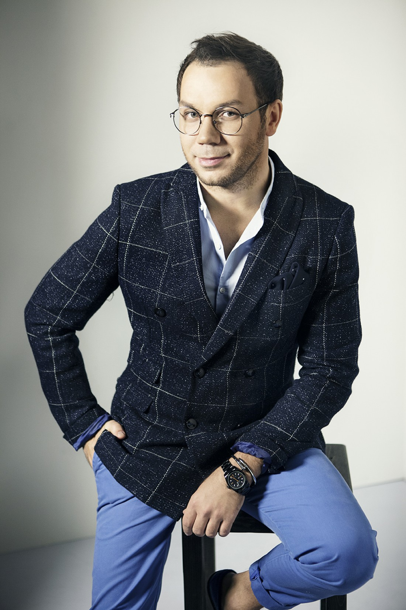
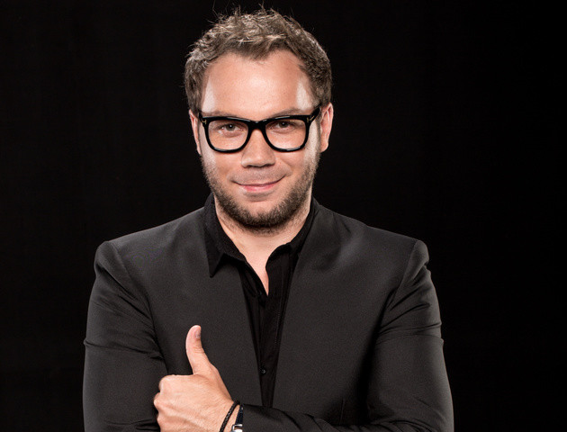

З дитинства Андрій освоював ази крою і шиття, він мріяв про кар'єру головного редактора модного журналу «Ізабель» і за пару років розмалював понад п'ятдесят шкільних зошитів, придумуючи ескізи для свого майбутнього видання.
У 11 років почав займатися на курсах крою та шиття. Тоді ж придумав псевдонім Андре Тан (Андре — від імені Андрій абревіатура прізвища, імені та по батькові).
1998 року вступив на факультет моделювання Харківського текстильного технікуму. Після цього вступив до Київського університету технології та дизайну.